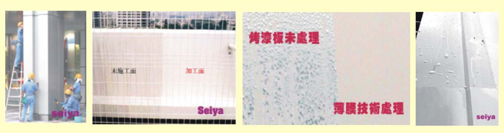
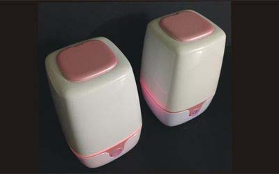

光觸媒加工(設計.合作)步驟
1. 依客戶所需(討論用途.目標價);使用環境條件,其抗菌或抗污效 除臭....等不同功能是否可行
2. 依被加工材料或元件.選用最佳之光觸媒原料及最佳節省原料之加工法,
3. 產品或模組使用光學設計,使其充份發揮其效果
4. 其它(專利.安規.效能驗證...等)
世屋光觸媒加工自2002年從日本引進台灣,已具有20年之加工技術與經驗,並榮獲政府研發補助

使用光觸媒技術後可將大多數的有害物質根除不留下副產物，它可很安全在廣大應用在環境上,是於世紀所能期待的技術
之一，但它不是萬能的,除材料外產品上之設計也必須考慮,現在有各種各樣的製品已上市場銷售,然使用光觸媒的製品中，例如抗污的效果，要目視它的效果需施工後數個月方可具有，不能立刻見到其效果特徵。因此消費者恐怕買到無效果的仿冒製品，這一點有損光觸媒製品的信賴性，又光觸媒的評價試驗沒有統一各商社個行其事，因此不能比較光觸媒製品的性能，也沒有品質規格，導致有性能可疑的製品出現，成為光觸媒市場發展的阻礙要因,因此才發展出認證方法,至少產品是具有效果。
目前認證方法以日本最為完善,原因在於產官學近年來投入數百億日元在此研究,並且JIS化(日本工業標準),並朝向ISO化.目前以空氣淨化為主要驗證,以下就是國內外認證實驗單位及方法簡介
日本工業標準JIS(此為日本國家標準,標準制定)
日本光觸媒工業會(驗證單位)
日本抗菌製品協議會 (驗證單位)
經濟部標準局CNS(此為 中華民國國家標準)台灣經濟部其CNS(中國國家標準),其方法是參考日本JIS制訂,因此可以說日本光觸媒JIS = 台灣光觸媒CNS ,日本JIS主要以R1701-R1709為主.國內之CNS還有部份尚未制定,日後也將參考日本JIS做修定,最新一版之CNS為2015年10月25日公布

目前光觸媒驗證主要還是以原材料或加工材做驗證為主,但實際上效果如何,這還是必需其它種驗證輔助做為依據,比方說光觸媒抗菌部份,是否在商品上能夠吸收的光線設計上夠量,空氣之流動.溫度.濕度....等問題,雖然光觸媒真的能殺菌,但在商品上不能用殺菌此字義,原因就是在於光觸媒受限許多條件,不能保證它的效果,因此良好的設計,才會有效果.這是值得注意的.
以目前市售光觸媒原料中大約是有70%的效果是很差,再加上不當使用在加工應用產品上,應有90%以上產品都達不到理論值5%之效應,因此這是消費者比較不能區別,

1.精密陶瓷-紫外線激發型光觸媒材料測定用光源cns15377
2.精密陶瓷-光觸媒材料之自我潔淨性能測定法-第1部：水接觸角量測15378-1
3精密陶瓷-光觸媒材料之自我潔淨性能測定法-第2部：濕式亞甲基藍分解性能15378-2
4.精密陶瓷-光觸媒材料水質淨化性能測定法：二甲基亞碸去除性15379-
5.精密陶瓷-光線照射下光觸媒抗菌加工製品之抗菌性能測定法15380-
6精密陶瓷-光觸媒材料空氣淨化性能測定法-第1部：氮氧化物去除性能15094-
7精密陶瓷-光觸媒材料空氣淨化性能測定法-第2部：乙醛去除性能(草案)
8.精密陶瓷-光觸媒材料空氣淨化性能測定法-第3部：甲苯去除性能(草案)
9.精密陶瓷-光觸媒材料空氣淨化性能測定法-第4部：甲醛去除性能(草案
10.精密陶瓷-光觸媒材料空氣淨化性能測定法-第5部：甲硫醇去除性能(草案)
11.精密陶瓷-光線照射下光觸媒抗黴加工製品之抗黴性能測定法(草案)
1. 依客戶所需(討論用途.目標價);使用環境條件,其抗菌或抗污效 除臭....等不同功能是否可行
2. 依被加工材料或元件.選用最佳之光觸媒原料及最佳節省原料之加工法,
3. 產品或模組使用光學設計,使其充份發揮其效果
4. 其它(專利.安規.效能驗證...等)
世屋光觸媒加工自2002年從日本引進台灣,已具有20年之加工技術與經驗,並榮獲政府研發補助